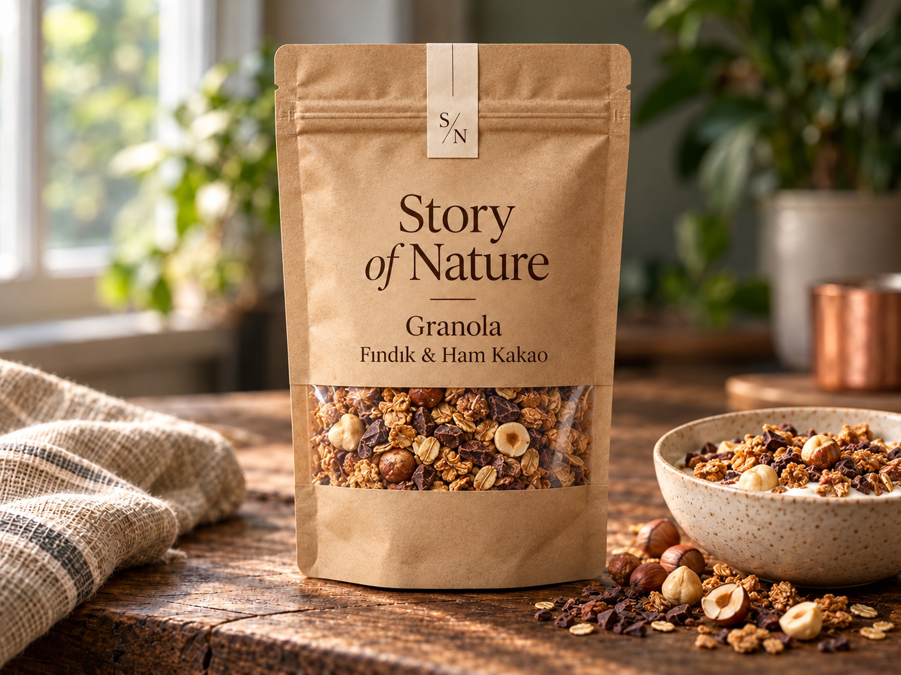
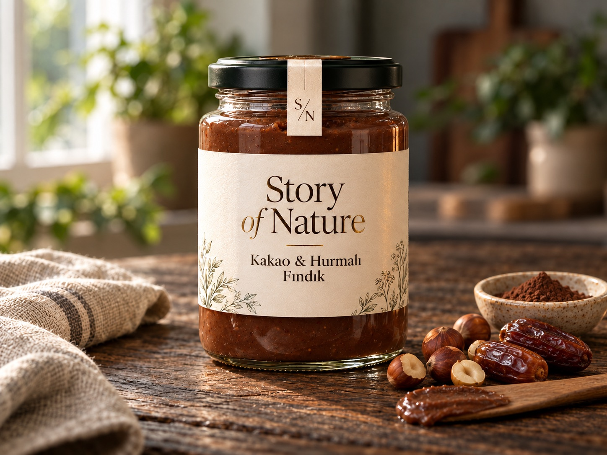

Zanaatkâr Sofra Ritüeli Kutusu
İlk taslaktaki özel kraft kutu sunumuyla: 2× Sade Kemik Suyu, 1× Papatya & Melisa Çayı, 1× Sade Tahin ve 1× Fındık & Kakao Granola.
Yaklaşık kutu tutarı1.195 TL
Kutu özel sayfasına git ↗ÖZEL KRAFT KUTULAR · TEK TEK SEÇİLDİ, BİRLİKTE GÜZEL
Altı hazır kraft kutu kombinasyonu ya da tamamen sana ait bir seçki. Her kutunun kendi özel sayfasını inceleyebilir veya aşağıdan kendi kutunu tasarlayabilirsin.
Kendi özel kutunu oluştur ↓
İlk taslaktaki özel kraft kutu sunumuyla: 2× Sade Kemik Suyu, 1× Papatya & Melisa Çayı, 1× Sade Tahin ve 1× Fındık & Kakao Granola.
Yaklaşık kutu tutarı1.195 TL
Kutu özel sayfasına git ↗


Bebekler için özel hazırlanan 5 çeşit bir arada: Sade Kemik Suyu, Tatlı Sebzeli Kemik Suyu, Elma & Armut Püresi, Kayısı & Şeftali Püresi ve Yulaf & Elmalı Kaşık Karışımı.
Yaklaşık kutu tutarı1.035 TL
Kutu özel sayfasına git ↗
Sade Kemik Suyu, Papatya & Melisa, Pürüzsüz Yer Fıstığı, Elma & Tarçın Ezmesi, Orman Meyveli İçecek ve Fındık & Kakao Granola.
Yaklaşık kutu tutarı1.344 TL
Kutu özel sayfasına git ↗

Sade, Zerdeçal & Zencefil, Biberiye & Kekik ve Sebzeli Kemik Suyu. Tek seriden dört farklı yön.
Yaklaşık kutu tutarı1.076 TL
Kutu özel sayfasına git ↗


Sade Tahin, Kakao & Hurmalı Fındık, Elma & Tarçın Ezmesi, Kayısı Ezmesi ve Elma, Tarçın & Ceviz Granola.
Yaklaşık kutu tutarı1.255 TL
Kutu özel sayfasına git ↗

Papatya & Melisa, Zencefil & Limon, Ihlamur & Kuşburnu, Hibiskus & Elma ile Orman Meyveli ve Şeftali & Zencefil içecek harmanları.
Yaklaşık kutu tutarı1.334 TL
Kutu özel sayfasına git ↗TAMAMEN SANA AİT KRAFT KUTU
7 ana ürün grubundan dilediğin lezzeti ve adedini seç. Farklı serilerden ürün ekleyerek kişiselleştirilmiş bir kutu ve talep listesi hazırlayabilirsin.